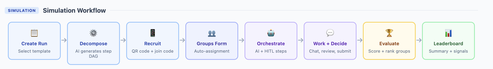
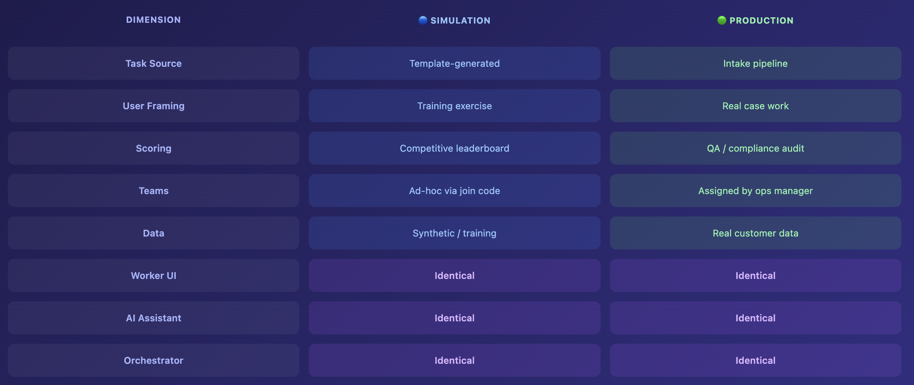
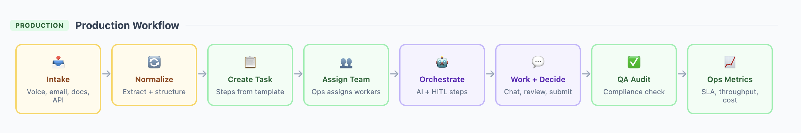

Customized AI harness: Partner with me for a win-win
Dr. Kate Wang
Why Most Startups Fail
"You do not rise to the level of your goals. You fall to the level of your systems."
— James Clear, Atomic Habits
"Most startups don't fail from a lack of passion — they fail from a lack of systems."
— Michael Gerber, The E-Myth Revisited
90%
of startups fail within 10 years
#1
root cause: no scalable systems or routines
23%
cite wrong team & poor coordination routines
My Mission
Coaching students and startups to build better systems and routines — and with agentic AI, we can scale those systems further than ever before.
Better Talent Utilization
Agentic AI identifies and deploys the right talent for the right tasks — systematically, not by chance
Scale Operations
Systematize workflows so startups can grow without proportionally growing headcount
Why Me?
Educator — 12 Years
Entrepreneurship & Innovation
Solution Architect
AWS, GCP, and Azure — CISSP cybersecurity standard
Founder, SkillSimm
Illustration of the Process
We start with a simulation of a complex real-world task — for example, processing 1,000 insurance claims across a distributed team with AI assistance.

Participant Experience
View Participant UI MockupFrom Simulation to Production
Once workflows are validated in simulation, we deploy agentic AI systems into live operations.

Production Workflow

Market Broadcasting
Automated content generation, multi-channel publishing, and audience segmentation
Lead Management
Automated lead capture, qualification, and AI-driven follow-up sequences
Training Agentic System Designers
To train students effectively, we need real company examples — we are recruiting startups willing to participate as case studies.
Live Case Studies
Students analyze your real operational and marketing challenges
System Design
Students design agentic workflows for your startup's friction points
Mutual Value
Actionable insights for startups; real experience for students
Benefits to Partner Startups
Systems Reports — Oct & Jan
Detailed reports on improving your marketing and organizational systems
Innovation Reports — Oct & Jan
Reports on adjacent markets or innovating complements from student research
Agentic AI Access
Potential access to AI systems to improve efficiency — deployed to save costs
Talent Connections
Connections to business students with skills or interest in helping your startup
What We Need from Startups
Agreement to Participate
Agreement to be discussed and featured as a case study in class
Pitch Deck or Video
Access to your pitch deck or pitch video for student analysis
Ready to Join?